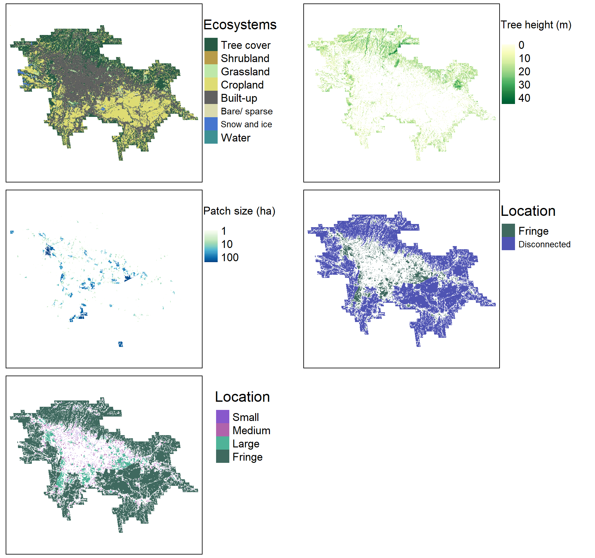

Global urban ecosystems
Urban ecosystems are a major component of the natural environment. Combined, they cover an area larger than Belarus, and are present on all continents except Antarctica. Urban ecosystems are the form of nature that most people interact with on a daily basis, and provide a range of benefits that enhance urban sustainability and livability. This research provides a systematic global atlas of urban ecosystems, across all urban areas with more than 250,000 residents in 2015.
Please explore the overview map below for more information on individual cities (Figure 1).
Figure 1. Interactive map containing information on percentage urban ecosystem cover for all urban areas with more than 250,000 residents in 2015. Please click each location for more information and a link to a detailed report
Methods
We combined several datasets to map urban ecosystems across all urban areas globally that had more than 250,000 residents in 2015. The urban area extent and population estimate was extracted from the GHS Urban Centre Database 2015, R2019A (Florczyk et al 2019).
Urban land and water cover types were mapped in 2020 at a spatial resolution of approximately 10 m by 10 m pixel size. These data were were extracted from the ESA WorldCover dataset 2020 (Zanaga et al. 2021).
Tree height was mapped in 2020 at a spatial resolution of approximately 10 m by 10 m pixel size. We extracted vegetation heights only for regions mapped as tree cover, to ensure internal consistency. These data were extracted from the global canopy height database (Lang et al. 2022).
Habitat connectivity and patch size are important attributes of urban ecosystems. Urban ecosystems that are connected to the adjacent rural areas may benefit from connectivity to these larger natural and semi-natural areas. We mapped the areas of all terrestrial and vegetated freshwater urban ecosystem types (thus excluding water and built-up land cover types) that were connected to the rural-urban boundary. Larger patches of contiguous urban ecosystem may provide greater benefits for biodiversity, ecosystem services, and recreation. We quantified the patch size of all contiguous patches of urban ecosystems that were not adjacent to the rural-urban boundary.
Data
Spatial datasets describing the urban ecosystems of each urban area are available in the Figshare Collection. Each urban area is available as an individual geoTiff dataset, named by the urban area name and a unique identification number.
Each raster dataset consists of 5 layers. In order, these layers are; the land cover type, tree canopy height, patch size, connectedness to the rural-urban boundary, and a classification of urban ecosystem types based on connectedness and patch size (Figure 2).
 Figure 2. Example map layers for Bandung, Indonesia.
Information on each of the layers contained in the dataset is listed below;
Land cover types
Land cover types follow the ESA WorldCover indexing system;
| Raster value | Land cover |
|---|---|
| 10 | Tree cover |
| 20 | Shrubland |
| 30 | Grassland |
| 40 | Cropland |
| 50 | Built-up |
| 60 | Bare/ sparse vegetation |
| 70 | Snow and ice |
| 80 | Permanent water bodies |
| 90 | Herbaceous wetland |
| 95 | Mangrove |
| 100 | Moss and lichen |
Tree canopy height
Tree canopy height is described in metres above the ground surface.
Patch size
Patch size is described in hectares.
Connectedness
Connectedness to the rural-urban boundary is described as a binary variable. Cells with 1 values are urban ecosystems connected to the boundary, while cells with 0 values are urban ecosystems disconnected contiguously from the boundary.
Type
Urban ecosystem spatial type is defined as below;
| Raster value | Definition |
|---|---|
| 1 | Disconnected from rural-urban boundary and smaller than 1 ha in patch size. |
| 2 | Disconnected from rural-urban boundary and between 1 ha and 10 ha in patch size. |
| 3 | Disconnected from rural-urban boundary and greater than 10 ha in patch size. |
| 4 | Connected to the rural-urban boundary (urban fringe). |
References
Florczyk A., Corbane C,. Schiavina M., Pesaresi M., Maffenini L., Melchiorri, M., Politis P., Sabo F., Freire S., Ehrlich D., Kemper T., Tommasi P., Airaghi D., Zanchetta L. (2019) GHS Urban Centre Database 2015, multitemporal and multidimensional attributes, R2019A. European Commission, Joint Research Centre (JRC) Link
Lang, N., Jetz, W., Schindler, K., & Wegner, J. D. (2022). A high-resolution canopy height model of the Earth. arXiv preprint arXiv:2204.08322.
Richards, D.R., Belcher, R.N., Carrasco, L.R., Edwards, P.J., Fatichi, S., Hamel, P., Masoudi, M., McDonnell, M.J., Peleg, N. and Stanley, M.C., 2022. Global variation in contributions to human well-being from urban vegetation ecosystem services. One Earth, 5(5), pp.522-533.
Richards, D. R., & Belcher, R. N. (2019). Global changes in urban vegetation cover. Remote Sensing, 12(1), 23.
Zanaga, D., Van De Kerchove, R., De Keersmaecker, W., Souverijns, N., Brockmann, C., Quast, R., Wevers, J., Grosu, A., Paccini, A., Vergnaud, S., Cartus, O., Santoro, M., Fritz, S., Georgieva, I., Lesiv, M., Carter, S., Herold, M., Li, Linlin, Tsendbazar, N.E., Ramoino, F., Arino, O., 2021. ESA WorldCover 10 m 2020 v100. Link